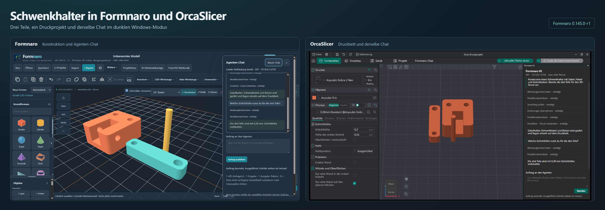

Entwicklung
Hier siehst du, wo Formnaro heute steht und was sich von Version zu Version geändert hat.
Stabil 0.150.0-r2
Skizzenmaße und gemeinsamer Agenten-Chat
Beim Verschieben von Skizzenelementen zeigt Formnaro den X- und Y-Versatz in Millimetern an. Die Maße lassen sich nach dem Loslassen ändern. Kreise und Rechtecke haben bearbeitbare Größenmaße. Skizzen vom Tablet kannst du auf eine gewählte Fläche am PC übertragen und dort weiterbearbeiten.
Mit Formnaro CAD 0.4.0 für Android kannst du denselben Agenten-Chat am Tablet und am PC fortsetzen. Zum Koppeln öffnest du in Windows „Projekte → Tablet verbinden“ und gibst den Agentenchat für das Tablet frei.
Windows-x64-ZIP ↗Versionshinweise ↗SHA-256-Prüfsummen ↗Abnahmebericht ↗
Nightly 0.148.0-r5
Tablet-Begleitmodus und direkte Teileübergabe
Formnaro erstellt das TLS-Zertifikat für die Tablet-Kopplung unter Windows ohne separates OpenSSL. Die direkte Teileübergabe vom Tablet an den PC wurde mit einem Android-Testbuild im Emulator geprüft.
Das Windows-x64-ZIP vollständig entpacken und „Formnaro starten“ öffnen. FreeCAD und STL-Konverter sind enthalten. Die Nightly ist unsigniert.
Windows-Nightly herunterladen ↗Versionshinweise ↗SHA-256-Prüfsummen ↗
Vorabversion 0.145.0-r1
Von Formnaro direkt zu OrcaSlicer
Modell in Formnaro ändern, mit Orca slicen und denselben KI-Chat im Slicer fortsetzen. Der Agent kann Schichthöhe, Wände, Füllung und Stützen setzen und nennt Druckzeit und Filamentbedarf. Den Druck startest du in Orca.


Versionsverlauf
November 2026
-
Entwicklungscheck im KI-Labor
Das KI-Labor bietet Einfach und Erweitert. Der Entwicklungscheck beginnt mit 15 Aufgaben auf Low. Fachlich fehlgeschlagene Fälle können auf High und optional Max erneut laufen. Das Übungsfenster kann im Hintergrund laufen.
Zusatzprüfungen für CAD-Alltag, STL-Konvertierung und Foto lassen sich getrennt starten. Die Ergebnisse unterscheiden den ersten Versuch von Erfolgen nach Prüferhinweisen. Der Export enthält frühere Stufen, Kontextlücken und wiederkehrende Muster.
Windows-x64-ZIP ↗Versionshinweise ↗SHA-256-Prüfsummen ↗Abnahmebericht ↗
-
Startseite und Wartung
Formnaro startet mit leerer Arbeitsfläche. Auf der Startseite stehen drei Beispiele und bis zu drei zuletzt verwendete Projekte. Eine vorhandene Autosicherung hat eine eigene Wiederherstellungsschaltfläche.
Die Wartungsarbeiten betreffen Projektdateien, Import und Export, Autosicherung und Vorschauen. Offene STL-Importkonturen bleiben beim Bearbeiten von Notizen erhalten.
-
Übungsmodus in Solid und Fusion
- Übungen führen Änderungen am geöffneten Modell im gewählten Bedienmodus vor. Die Schritte laufen in einer Projektkopie. Nach der Vorschau lässt sich das Ergebnis übernehmen.
- Die KI erhält bei Bedarf die Bedienwege des gewählten Modus. Im KI-Chat lassen sich CAD-Merkmale über „Stelle anhängen“ als Bezug mitgeben.
- Die neue Trapezgewinde-Grundform akzeptiert Längen bis 3.000 mm. Wiederverwendete Gewindeperioden beschleunigen die Berechnung langer eingängiger Außengewinde.
Das portable Windows-x64-Paket wurde lokal geprüft. Ein durchgehendes Tr 16×4 über 548 mm wurde in Normal erstellt und über den Übungsmodus in Solid und Fusion erfolgreich aus der Projektkopie ins Modell übernommen.
Windows-Download und vollständige Versionshinweise ↗Solid-Vorführung ansehen
-
Ein zuverlässigeres KI-Labor
Das Labor speichert Ergebnisse atomar. Eindeutigere Werkzeugrückmeldungen, kompatible ältere Skizzenkanten und Korrekturen bei KI-Antworten und Prozessabschluss.
Gezielte TestsKampagnenauswertungFrühere Muster-Demo mit Prompt und MessdatenMuster-Video
-
Nachtests zu den Aufbauaufgaben
Korrigierte Körperauswahl, ebene Bohrflächen, Checkbox-Zustände und Rückmeldungen für Skizzenersatz und Höhe. Gezielte Nachtests bestätigten alle 16 ursprünglichen Bedingungen über mehrere Programmstände.
Der ursprüngliche DeepSeek-Aufbaubenchmark steht bei 5/16. Die späteren Ergebnisse sind gezielte Nachtests auf mehreren Programmständen.
-
Bohrablauf und Zugang erneuert
Die Werkzeugauskunft führt durchs Bohren bis zum Übernehmen. Das Labor erneuert ablaufende ChatGPT-Zugänge vor weiteren Anfragen. Ein neuer vollständiger Sol-Benchmark ergab 16/16.
DeepSeeks früheres Ergebnis von 16/16 stammt von 0.137.0-r1. Frühere Sol-Läufe und gezielte Nachtests behalten ihre eigenen Ergebnisse.
-
Zeichnungsschritte und Sol-Antworten
Vollständige Zeichnungsfelder und Rückmeldung zum sichtbaren Dialogzustand. Zwei gezielte Sol-Zeichnungsnachtests bestanden.
-
Fester KI-Benchmark und sauberes Beenden
Das KI-Labor trennt den Grundbenchmark mit 16 Versuchen von gezielten Nachtests. Reparaturen für Menüführung, Flächenauswahl, große Baugruppenberichte und das Schließen des Hauptfensters.
-
KI-Vergleiche in der Modellauswahl
Testergebnisse und Diagramme stehen in der Modellauswahl. Modellierer, Überwacher und Abschlussprüfer lassen sich im Labor getrennt einstellen.
-
Nightly · STL-Nacharbeit und Symmetrie
Der Konverter prüft zuerst einen lokalen STEP-Kandidaten. Geeignete Bereiche lassen sich gezielt nacharbeiten oder nach einer Symmetrieprüfung spiegeln.
-
Nightly · KI-Chat und Projektübungen
Kompakter KI-Chat mit auswählbarem Szenenkontext. Projektübungen laufen auf einer Kopie und bieten ihr Ergebnis zur Übernahme an.
-
Nightly · Projektformat 32 wieder lesbar
Stellt das Öffnen von Projekten und Autosaves im Format 32 wieder her. Enthält die Chat- und Bedienungsänderungen aus r1.
-
Nightly · Chatfokus und Ansichten
Größerer Chat, Aufgabenverlauf, Modellansichten für die KI und sichtbare Verschiebe- und Drehgriffe. Diese Revision wurde durch r2 abgelöst.
-
Vorschau · Modellierung, Kopplungen und Prüfstände
Erweiterte native Modellierung, Fehler- und Speicherbehandlung, Schraub- und Kippkopplungen sowie gespeicherte Prüfstände.
-
Vorschau · Gezielte Werkzeugauskunft
Werkzeugauskunft bei Bedarf, klarere Bedienwege fürs Zentrieren, Ausrichten und für Muster sowie getrennte Übungsgespräche.
-
Vorschau · Fehlerhafte Zwischenvorschauen
Fehlerhafte Zwischenvorschauen blockieren spätere Aufträge nicht mehr. Die Übung bietet Tempo, Pause und Fortsetzen.
Oktober 2026
-
Vorschau · Kleineres portables Paket
Kompakteres Windows-Paket mit nötigen Laufzeiten und bearbeitbaren Beispielen. Offline-Sprache ist optional nachladbar.
-
Vorschau · ATLAS-5 und bewegte Zahnradträger
Gekoppelte Zahnradgelenke folgen einem gemeinsam bewegten Träger. Das Beispiel ATLAS-5 zeigt fünf bewegliche Achsen.
-
Zahnradkopplung und KI-Bedienhilfe
Übersetzungen für Zahnradpaare, ein bearbeitbares 6:1-Getriebe und wiederholbare Menüvorführungen in der KI-Bedienhilfe.
-
Material, Stücklisten und MIT-Lizenz
Flächenfarben, Materialdichte, Masse und Schwerpunkt, CSV-Stücklisten und gespeicherte Explosionsansichten. Der eigene Anwendungscode steht unter MIT.
-
Integrierte CAD-Laufzeit
FreeCAD und Python werden im portablen Paket mitgeliefert. Der Startordner macht Programm, Projekte und Bibliothek leichter auffindbar.
-
Kompaktere Oberfläche
Neu angeordnete Menüleiste und Werkzeugregister, schmalere Seitenbereiche und mehr Platz für das Modell.
-
Gespeicherte KI-Aufträge
KI-Aufträge speichern Zielmaße, Annahmen und Prüfbefunde. Unterbrochene Aufträge lassen sich nach einem Neustart fortsetzen.
-
FreeCAD-Merkmale und Projektparameter
Gespeicherte FreeCAD-Konstruktionen lassen sich als Merkmalsbaum mit Eigenschaften und Abhängigkeiten anzeigen. Projektparameter stehen für gemeinsame Maße bereit.
-
Technische Fotoansichten
Technische Fotoansichten für die Projektdokumentation und vier Bedienmodi vom Grundkörper bis zur detaillierten Konstruktion.